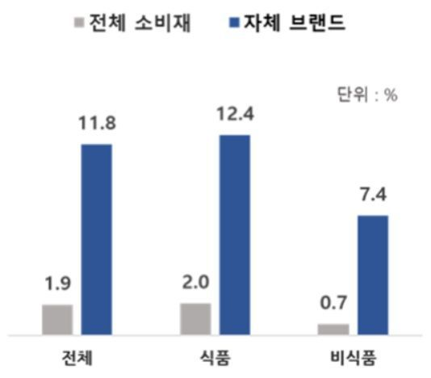

[서울=뉴시스]서울시가 올해 '서울우먼업프로젝트'로 총 2610명의 경력보유여성의 경제활동 복귀를 지원한다고 14일 밝혔다. (사진=서울시 제공). 2024.02.14. photo@newsis.com
[서울=뉴시스] 조현아 기자 = 서울시가 올해 '서울우먼업프로젝트'로 총 2610명의 경력보유여성의 경제활동 복귀를 지원한다고 14일 밝혔다.
서울우먼업프로젝트는 '우먼업 구직지원금' 최대 90만원, 3개월간 기업에서 일 경험을 쌓을 수 있는 '우먼업 인턴십', 인턴을 정규직으로 채용하는 기업을 지원하는 '우먼업 고용장려금' 300만원 등으로 구성된다.
지난해 기준 서울시 경력보유여성은 총 18만명으로 이중 15만명(약 84%)이 만 30세~49세다. 주요 선진국에서는 여성들이 젊을 때 일하다가 50대에 은퇴하는 경향을 보이지만, 한국에서는 20대에 취업한 뒤 30대에 임신·출산으로 일을 그만두고 자녀가 성장하면 다시 시작하는 현상이 두드러진다.
시는 출산과 육아로 일터를 떠났던 여성들이 경력을 다시 살릴 수 있도록 적극 지원에 나선다는 계획이다.
올해는 30~40대 여성 2500명에 구직 활동에 쓸 수 있는 '우먼업 구직지원금'을 지원한다. 3개월간 매월 구직활동 이행 시 30만원씩 최대 90만원을 우먼업 포인트로 지급하는 식이다. 취·창업에 성공하면 90만원 한도 내에서 취·창업 성공금 30만원도 지급한다.
지원자 모집은 올해 3회에 걸쳐 진행하고, 1차 모집은 19일부터 다음 달 8일까지 실시한다. 지원 조건은 서울에 거주하는 만 30~49세 미취창업 여성으로 중위소득 150% 이하여야 한다. 주 15시간 미만 근무하는 경우에는 미취업자와 동일한 자격이 주어진다.
시는 이번 모집에서 서울우먼업 홈페이지를 통해 선착순으로 총 1690명까지 접수를 받은 뒤 심사를 거쳐 1300명을 선정한다. 올해는 양육자를 우선 선정해 지원할 예정이다. 지원 대상자는 3월 28일 발표한다.
구직지원금 신청 이후 서울시 26개 여성인력개발기관에 구직 등록을 하면 우먼업 상담사와의 1대 1 컨설팅과 함께 다양한 직업훈련교육 등의 서비스도 제공한다. 해당 기관에서는 정보통신(IT/SW), 경영·회계·사무, 사회복지, 보육, 문화·예술·디자인, 서비스 분야 등 올해 약 1400개의 교육과정을 운영하고 있다.
'우먼업 인턴십' 프로그램도 실시한다. 직업훈련교육 수료, 자격증 취득 등으로 취업 준비를 마친 경력보유여성을 대상으로 3개월간 기업 인턴 기회와 인건비(생활임금)를 제공해 취업을 지원하는 사업으로 올해 총 110명을 선정한다.
다음 달 기업 모집을 시작으로 4월부터 '채용연계형(80명)', '프로젝트형(20명)', '경력채움형(10명)' 등 사업 유형별로 순차적으로 참여자를 모집할 계획이다. 올해 채용 계획이 있거나 육아휴직자가 있는 기업의 경우 '서울우먼업' 홈페이지에서 인턴십 사업 일정을 확인할 수 있다.
우먼업 인턴십과 연계 추진되는 '우먼업 고용장려금'은 올해 50개 기업을 대상으로 실시한다. 인턴십 종료 후 참여자를 정규직으로 전환하거나 1년 이상 계약한 기업에 300만원을 지급하는 사업이다. 시는 양육친화기업과 장기고용 의사가 있는 기업을 적극 발굴해 지원한다는 계획이다.
서울우먼업프로젝트’에 대한 자세한 내용과 신청방법은 서울우먼업 홈페이지나 카카오톡(서울우먼업 프로젝트), 대표전화(1660-3040)를 통해 확인할 수 있다.
김선순 서울시 여성가족정책실장은 "단순한 현금 지원이 아닌 여성인력개발기관과의 연계를 통한 맞춤형 취·창업 서비스를 적극 지원하는 만큼 3040 경력보유여성의 많은 참여를 바란다"고 말했다.